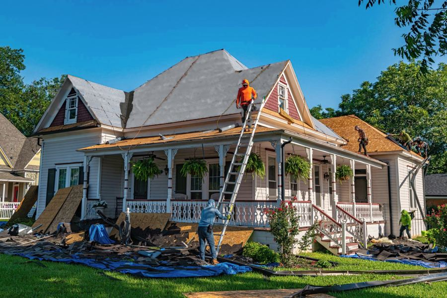
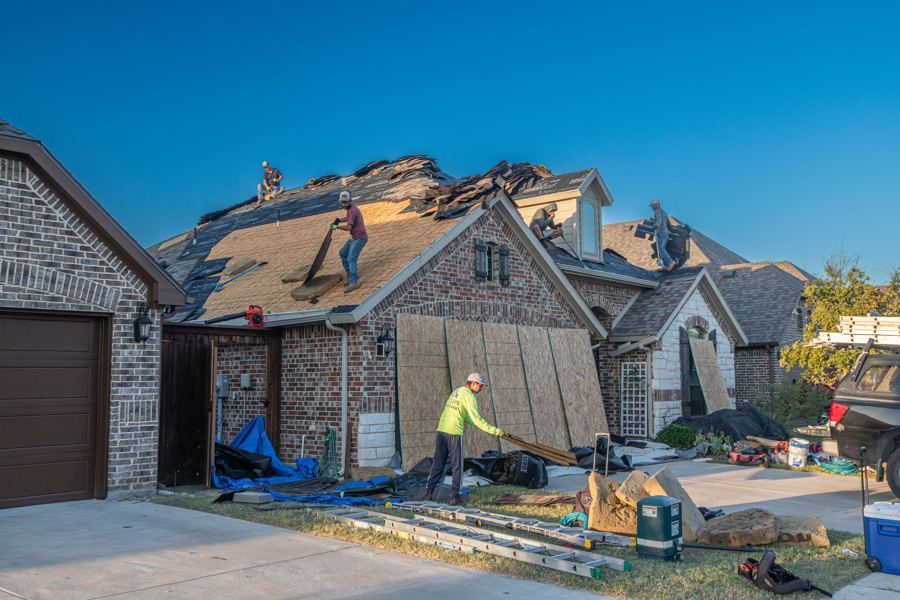
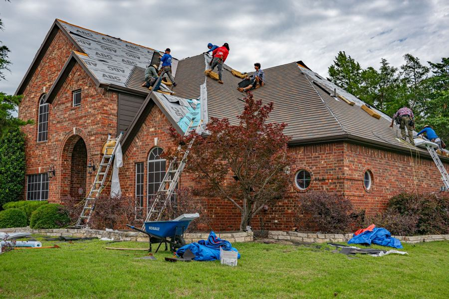
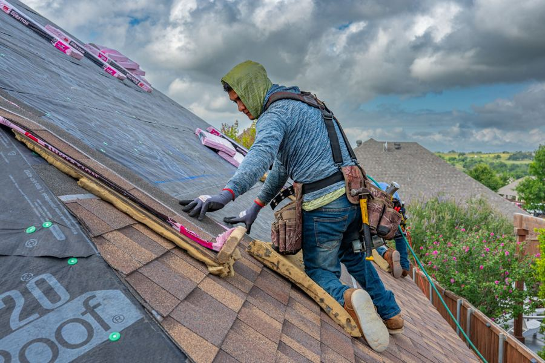
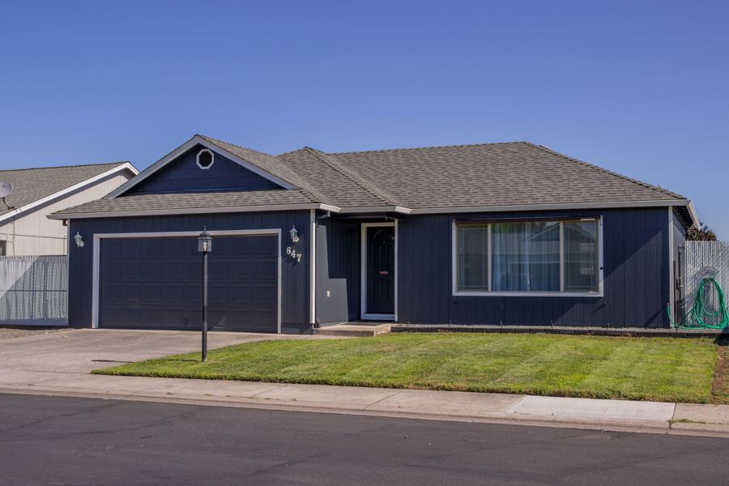
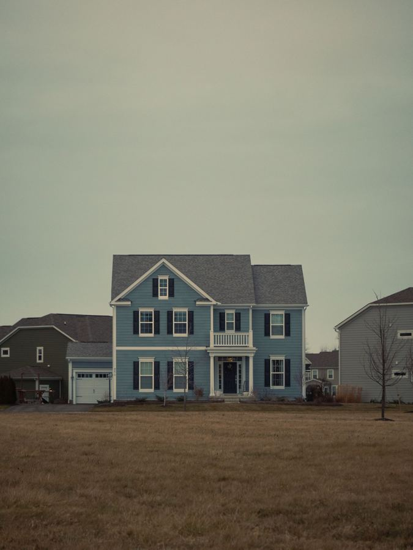
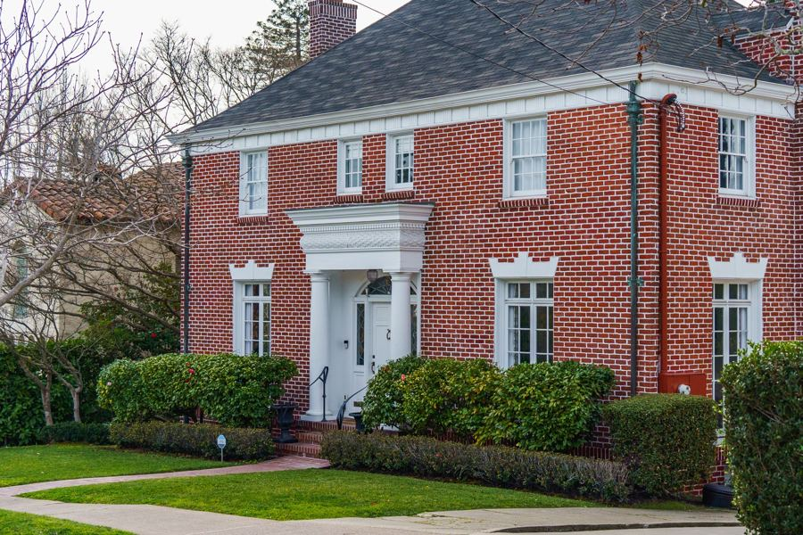
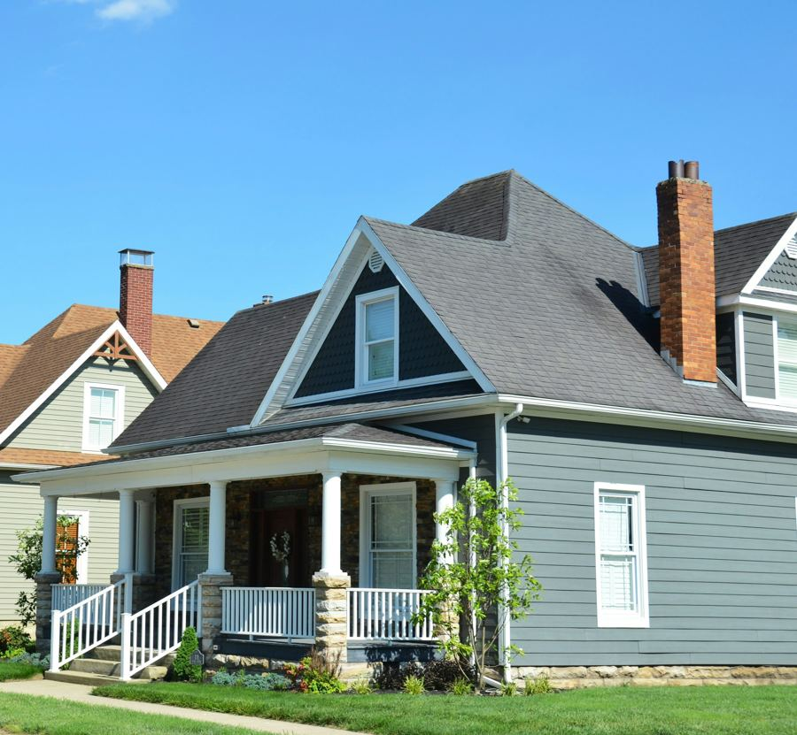

33 фото, все реальные: Unsplash и Pexels, бесплатная коммерческая лицензия, авторы — в CREDITS.md. Файлы лежат в src/assets/photos/. Это реальные американские дома и бригады (Техас, Северная Каролина и др.), снятые в Огайо — только виды Columbus. Дома отобраны так, чтобы читались как Средний Запад.
Чего на стоках нет — говорю прямо, ничем не подменяю
Пар «до / после» одного и того же дома для 6 кейсов. На стоках их нет. Есть 4 реальных объекта «в процессе» от одного фотографа (Ryan Stephens). Предлагаю в кейсах формат «на объекте → детали работ» вместо слайдера до/после, либо слайдер «повреждение → новая кровля» с явной подписью «representative photos». Нужно твоё решение.
Магнитная уборка двора. Фото кровельщика с магнитной щёткой не нашёл. В таймлайне последний этап — вывоз мусора и готовый дом. Обещание про $25 за гвоздь держится на тексте.
Групповое фото бригады для About. Нет — либо европейские стройки, либо люди в касках на белом фоне (под запретом брифа). На About — кровельщик со снаряжением + вид Columbus.
На части фото видны реальные бренды: розовые пачки черепицы, подложка с логотипом, тачка Kobalt. Кадрируем так, чтобы логотипов не было, или берём другой кадр.
1. Hero — 4 кандидата
Замена случайного кадра из превью. Все четыре — один фотограф и реальные объекты замены кровли. Цвет на снимках перенасыщен (HDR): перед вёрсткой приглушу насыщенность на 10–15 %, чтобы фото выглядели документально.

HERO-1Дом с верандой, бригада на крышеУзнаваемый «старый Columbus» (Clintonville, German Village). Видно 5 человек в работе, лестницу, брезент на газоне, который защищает клумбы: это прямо закрывает страх «бардака». Лица мелкие. Мой выбор для hero.

HERO-2Кирпичный пригородный дом, настилСильный процесс: листы фанеры, рабочий на подъездной дорожке, вся бригада на крыше. Минус: кирпич + камень читаются скорее как Техас, чем как Огайо.

HERO-3Кирпичный дом, 6 человек на крышеХороший масштаб бригады, брезент на газоне. Минус: на тачке виден бренд (кадрировать), небо серое.

HERO-4Кровельщик в страховке, крупноВидно руки, перчатки, лицо в профиль, страховочную систему. Самый «человеческий» кадр. Минус: на подложке и пачках бренды — нужен кроп. Лучше как второй кадр рядом с hero или в секции «процесс».
2. Калькулятор: выбор уклона (фирменный момент A)
«Which looks most like your roof?» Уклон на фото оценён на глаз, это ориентир для домовладельца, а не замер. Точный уклон даёт осмотр.

4/12 · LOWОдноэтажный ranchПологая крыша, типичная для 1960–80-х.

6/12 · STANDARDДвухэтажный дом с сайдингомСамый частый случай в пригородах.

8/12 · STEEPКирпичный colonial, вальмовая крышаКруче и сложнее в работе.

12/12 · VERY STEEPСтарый дом с верандойКрутые фронтоны, нужна страховка и больше времени.
3. «A roof in one day»: таймлайн (фирменный момент B)